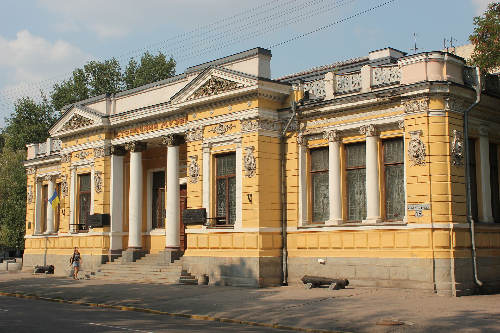
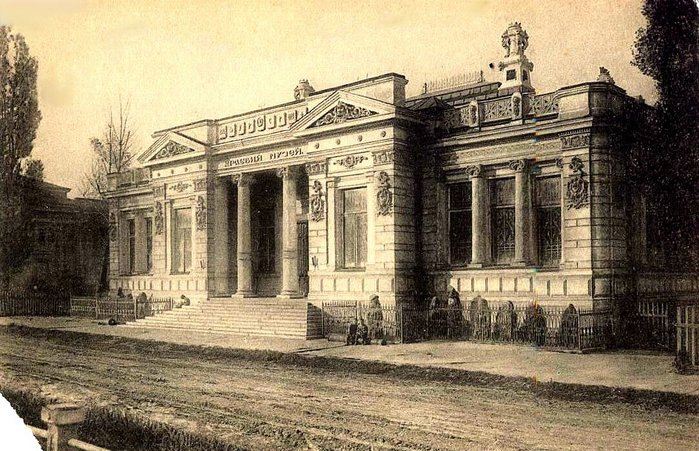
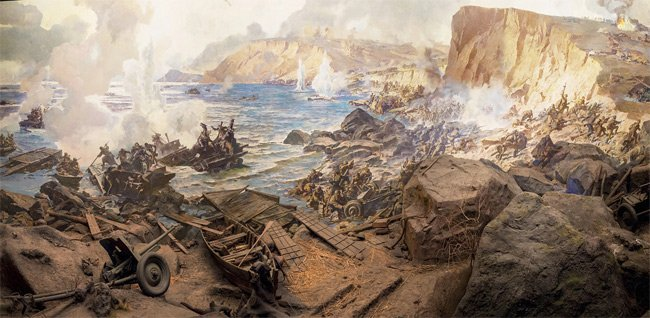

Історія музею
Музей засновано в 1849 р. як Громадський музей старожитностей Катеринославської губернії. Він є одним із найстаріших музеїв в Україні. Біля витоків його створення стояли місцеві діячі – очільник Катеринославської губернії А.Я. Фабр і директор гімназії та училищ краю Я.Д. Грахов. З 1902 до 1919 року музей мав назву – Обласний музей імені О.М. Поля, у 1919–1926 рр. – Народний музей, 1927–1935 рр. – Крайовий історико-археологічний, з 1935 р. – Історичний музей, з 1940 р. – сучасна назва. Великий внесок в розвиток музею зробили: знавець історії, підприємець, меценат і колекціонер О.М. Поль, український історик, академік Д.І. Яворницький (директор музею в 1902–1933 рр.), а також директор музею у 1963–1983 рр., історик, заслужений працівник культури УРСР А.Ф. Ватченко.
Музейний комплекс має такі відділеня:
- історичний музей;
- діорама «Битва за Дніпро»;
- меморіальний будинок-музей Д.І. Яворницького;
- музей «Літературне Придніпров’я»;
- музейний центр О.П. Блаватської та її родини;
- музей історії розвитку місцевого самоврядування Дніпропетровської області;
- музей «Громадянський подвиг Дніпропетровщини в подіях АТО» з експозицією просто неба «Шляхами Донбасу» (створено у 2016–2017 рр.) і в приміщенні Діорами.
 
Діорама "Битва за Дніпро"
Роботи зі створення Діорами «Битва за Дніпро» в Дніпропетровському історичному музеї почалися у серпні 1971 p., а завершено 7 травня 1975 р., до 30-річчя Перемоги у Другій Світовій війні. Кут огляду діорами становить 230 градусів, що підсилює панорамний ефект. На діорамі відтворена одна з героїчних сторінок війни – битва за Дніпро на одному з 23-х плацдармів, якими оволоділи радянські війська восени 1943 р. Форсування Дніпра і захоплення плацдарму на південь від тодішнього Дніпропетровська біля сіл Військове-Вовниги відіграло важливу роль у ході війни.

Локація